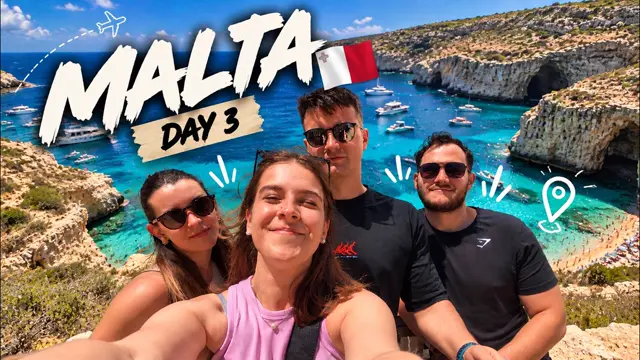
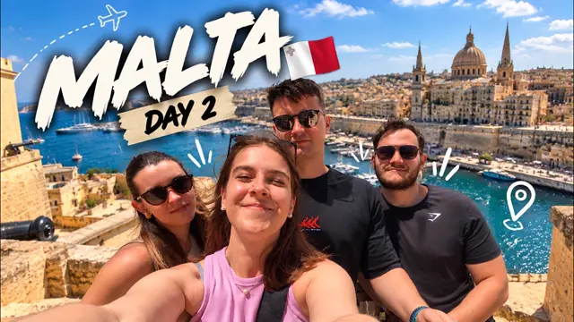
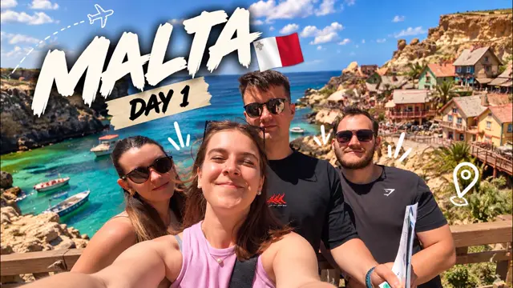
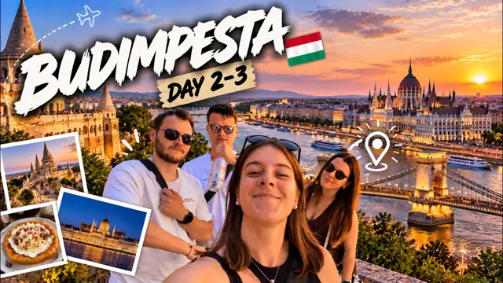
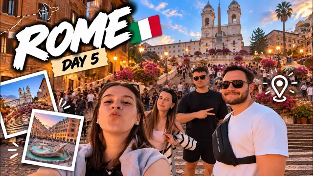
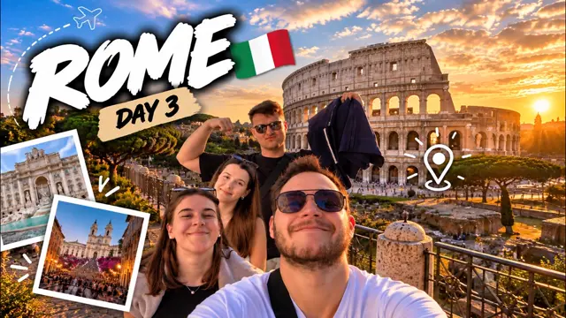
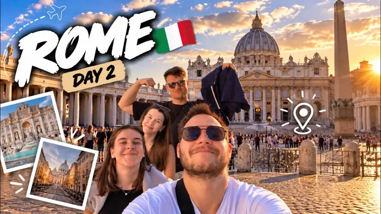
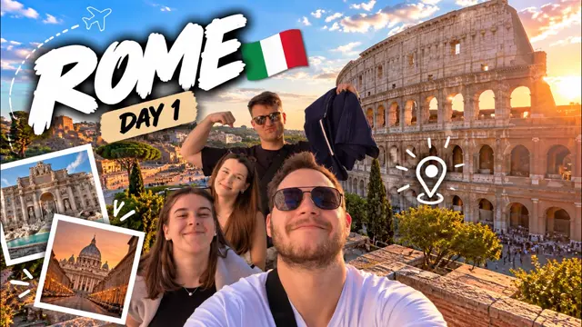
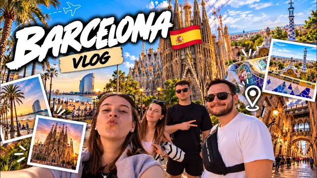

Raw footage in.
Vlog out.
Wayfare Studio turns your travel clips into a finished vlog, ready to post. Claude edits, you decide.
Free, for Mac with Apple silicon. Also available for Windows and Android.
Free, for 64-bit Windows 10 or later. Also available for macOS and Android. Free, for Android 8 or later. Also available for macOS and Windows. Wayfare Studio is for Mac, Windows and Android. On iPhone or iPad, send yourself this page and open it on your computer.23 films.
All edited in Wayfare.
From 6 trips, all shot on a phone. Click any film to watch it.



Malta — Day 3, 4:50
Malta — Day 2, 5:50
Malta — Day 1, 5:41
Budapest — Days 2–3, 2:35- Budapest — Day 1, 3:42

Rome — Day 5, 3:39- Rome — Day 4, 5:49

Rome — Day 3, 4:02
Rome — Day 2, 4:02
Rome — Day 1, 3:07
Barcelona — The Whole Trip, 6:04
Where we’ve been.
Every place a film was made. Click one and the films from there appear below.
Drag to spin. Zoom with the buttons, a pinch or ⌘/Ctrl + scroll. Click a place to fly there.


Done — clip 14 is shorter


Fifty-five clips. One day.
Drop them in straight from the camera or phone.
Every clip, in its place.
Sorted by the time you shot it. The story of your day, found for you.
Claude edits. You decide.
Change anything with one sentence. No timeline to wrestle.
Music that fits the place.
A built-in library by country and mood. It ducks under every word.
Your day, in motion.
Place cards with local time, a trailer of the best moments and a real 3D map of your route.
Checked before you publish.
Over twenty-five checks — loudness, cuts, captions — with one-click fixes.
Finished. Ready to post.
Publish straight to YouTube, TikTok and Instagram — title, description and tags written for you.
Sixty-two seconds
of Wayfare.
The film couldn’t load. Open it directly.
Claude is built in.
Open the Claude panel next to the timeline, paste your Anthropic API key and say what you want. Claude edits with the app's own tools; you see every step and undo it with ⌘Z. You pay Anthropic only for what you use.
Shorten the dinner and put Spanish guitar under the walk.
- Shortening the dinner shot
- Adding a track from the Spain group under the walk
- Lowering the music under speech
Done. You can undo any step with ⌘Z.
Already on Claude Code? Our vlog skill works there too:
# in Claude Code, no Node.js needed:
/plugin marketplace add vidzadnikar/
/plugin install wayfare@wayfare
# then:
Make a vlog from my Lisbon clips.
npx skills add vidzadnikar/
# then, in Claude Code:
Make a vlog from my Lisbon clips.
Needs Claude Code. The npx route also needs Node.js.
Common questions.
Is Wayfare really free?
Yes. Every feature is free, with no subscription and no limits. If you use the Claude panel with your own key, you pay Anthropic only for what you use.
Where do my clips go?
They stay on your computer. Nothing is uploaded until you publish.
Do I need to know how to edit?
No. Claude turns the day into a story, and you say what you want changed in one sentence. If you like, you can also edit everything yourself on the timeline.
What do I need for Claude?
An Anthropic API key for the panel in the app. If you prefer Claude Code, the vlog skill works there.
Which devices does it run on?
Macs with Apple silicon (macOS 12 or later), 64-bit Windows 10 or later, and Android 8 or later. There is no Linux version yet.
Why does my Mac warn me the first time?
The app isn’t notarized with Apple yet. Open System Settings → Privacy & Security, click “Open Anyway” at the bottom and confirm. From then on it opens normally.


Your next trip, edited.
Version 0.1.0 is free, with no subscription. Your clips stay on your computer until you publish.
Download for macOS